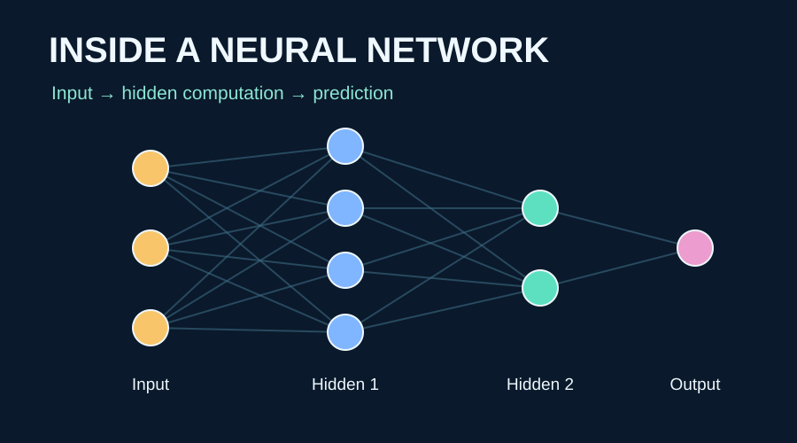

ARTIFACT 7 · VISUAL PRESENTATION
Inside a Neural Network
How six essential components transform input data into predictions—and how training changes the model.

View the visual guide
Open PDF in a new tab if the preview is unavailable on your device.
Introduction & objective
Developed for AIML-501 as a portfolio-ready explanation of layers, neurons, weights, activation functions, loss functions, and optimization algorithms. The diagrams follow information from features to an output, then trace the feedback loop that improves a network through training.
What the presentation covers
- Network architecture and forward propagation
- Weighted signals and nonlinear activation
- Loss measurement and gradient-based parameter updates
- TensorFlow Playground experiments and what to observe
- Key insights and practical implications
Approach & integrity
The neural diagrams are explanatory illustrations, not empirical training captures. Playground configurations and predicted behavior are provided as a reproducible exploration guide; no accuracy, epoch count, or loss figures are claimed without a recorded run. Try the configurations and add screenshots to document personal results.
Professional value
This artifact demonstrates the ability to simplify technical AI mechanisms into clear, visually organized material for interdisciplinary stakeholders, including operations teams evaluating predictive models.
References and further learning
TensorFlow. (n.d.). TensorFlow Playground. https://playground.tensorflow.org/
Goodfellow, I., Bengio, Y., & Courville, A. (2016). Deep learning. MIT Press. https://www.deeplearningbook.org/
Google. (n.d.). Neural networks: Structure and training. Google Machine Learning Crash Course.